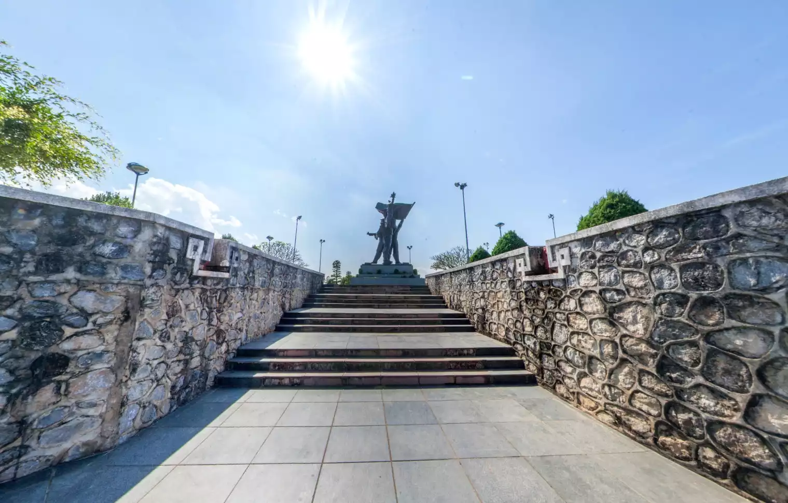

Quyết định được hình thành ở đâu?
Đi vào Sở chỉ huy Mường Phăng để đọc mối quan hệ giữa thông tin, bí mật và tổ chức.
Hành trình di sản số Điện Biên
Tám không gian 360° kết nối sở chỉ huy, điểm cao, di tích và các nơi tưởng niệm thành một hành trình học lịch sử có nhiệm vụ, dữ liệu và góc nhìn hệ thống.

Trung tâm khám phá
Chọn một địa điểm, mở tour trong khung lớn và thực hiện nhiệm vụ quan sát. Mỗi tour là một trạm học tập độc lập nhưng cùng nằm trong một tuyến truyện chung.
Tour 360° được tích hợp mô hình giả lập xoay không gian nội bộ kết hợp dữ liệu eGAL. Có thể nhấp vào các nút mũi tên [←] và [→] để chuyển chặng và mở bảng thông tin chi tiết.
Cấu trúc trải nghiệm
Hành trình không xếp các tour như một thư viện rời rạc. Mỗi chặng trả lời một câu hỏi khác nhau về chiến dịch, di sản và ký ức.
Đi vào Sở chỉ huy Mường Phăng để đọc mối quan hệ giữa thông tin, bí mật và tổ chức.
Đặt Đồi A1 cạnh Đồi D1 để so sánh cao độ, tầm nhìn, công sự và hướng tiếp cận.
Mở rộng tới Thành Bản Phủ để thấy lớp ký ức thế kỷ XVIII và truyền thống bảo vệ vùng biên.
Kết nối A1, Him Lam, Độc Lập và Tông Khao trong một tuyến tri ân có điểm dừng và suy ngẫm.
Trục thời gian
Thay vì học thuộc các mốc rời rạc, hành trình cho thấy chỉ huy, hậu cần, kỹ thuật và chiến đấu liên kết với nhau như thế nào.
Tổ chức lực lượng, hậu cần, pháo binh và điều chỉnh phương án tác chiến.
Mở màn tại Him Lam, tiếp tục vào Độc Lập và làm thay đổi cục diện phía Bắc.
Tiến công các cứ điểm phía Đông, xây dựng trận địa và siết chặt vòng vây.
Đánh chiếm các vị trí còn lại và tổng công kích phân khu Trung tâm.
Bản đồ tư duy
Nhấp vào từng cứ điểm trên bản đồ hoặc danh sách để kích hoạt radar sonar và phân tích dữ liệu lịch sử & STEAM tương ứng.
Phòng học STEAM
Mỗi trạm yêu cầu quan sát, lập giả thuyết, xây mô hình và giải thích giới hạn của kết luận. Nhấp vào từng thẻ để mở phòng thí nghiệm tương tác.
Đối chiếu A1 và D1, mô hình hóa vùng quan sát và vùng che khuất bằng các giả định đơn giản.
12 phút · Nhóm 3–4 · Nhấp để thử nghiệm ↗Thiết kế tuyến tham quan ngắn nhất nhưng vẫn đi đủ bốn lớp: chỉ huy, chiến trường, di sản và tưởng niệm.
18 phút · Bản đồ lưới · Nhấp để thử nghiệm ↗Quan sát hầm, đường tiếp cận và không gian chỉ huy để đề xuất một mô hình kết cấu có thể kiểm thử.
20 phút · Mô hình vật lý · Nhấp để thử nghiệm ↗Chia ảnh toàn cảnh thành các vùng, gắn nhãn điểm quan sát và tính độ phủ thông tin của một tour.
15 phút · Quyết định nhóm · Nhấp để thử nghiệm ↗Nghiên cứu & dự án
Hệ thống kết hợp tư liệu lịch sử, trải nghiệm 360° và nhiệm vụ STEAM. Dữ liệu lịch sử đã được hiệu đính chuẩn xác theo tư liệu bảo tàng.
học sinh tham gia khảo sát nhu cầu và trải nghiệm học tập lịch sử số.
Giao diện, tám tour và mười cứ điểm sa bàn đã được kích hoạt toàn diện với động cơ tương tác độc lập.
Tư liệu trực quan